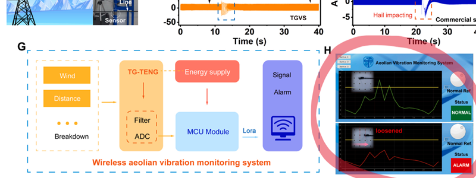
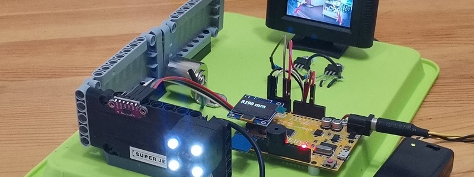

提供：
--- 单片机/物联网/自动化/嵌入式 项目支持（ 声、光、电、磁、波等采集、控制、分析、报表、协同 ）
--- 中小企业（共享）计算机网络服务（ 中英双语、采购、安装、维修、培训、资产管理、数据安全...）
--- 定制软硬件开发
下图为某重点大学实验室提供的项目支持（遥测部分）：
手绘任意波
演示版下载：https://pan.baidu.com/s/1mEDFnIWEZdgUCwTuTMac0Q 提取码：demo
本软件为python打包而成的单一执行文件，本人申明不包含恶意代码，但是考虑到不确定因素，请自行使用杀软验证
开门检测
温度记录仪
风扇转速测量
串口UI
监控 CPU GPU
Python 控制 示波器
这样可以实现自定义测量：比如远程测量，定时测量，长时间记录、数字滤波等